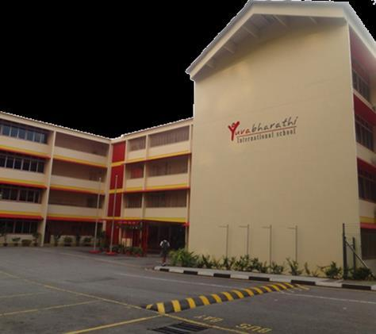

CAMPUS LIFE
Yuvabharathi International School
Established on 2009
Address : Hu Ching Road, Taman Jurong 619 651.
YBIS Sg is a Indian International School that treats everyone equally and be care for each other and help others when needed in studies or when hurt.
YBIS Chemistry Lab
N / A
YBIS SG 4th Floor, Right Side
YBIS Sg Chemistry Lab is wher students from Grade 9 to 12. Sudents here do theoretical studies and work on their practical studies too .
School Acheivements
Chingay Parade 2016

Chingay Pararde - A Good Show to be Entertained
YBIS participated in Chingay parade 2016. It is a jolly show with a lot of music and dance performances. Yuvabharathi students did a dance in chingay pararde. It is held once every Year. At the end of the show, there are fireworks and they give out gifts.